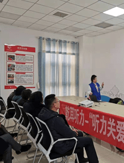
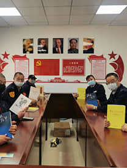
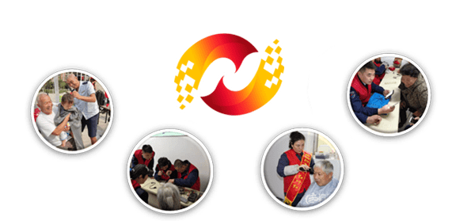
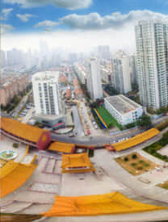
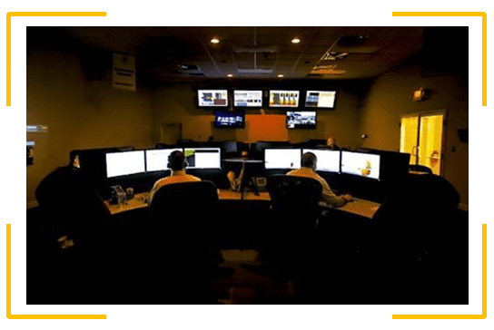
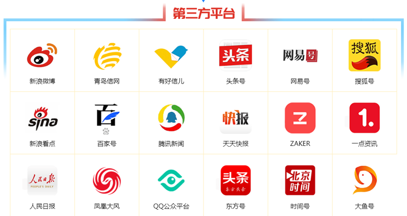
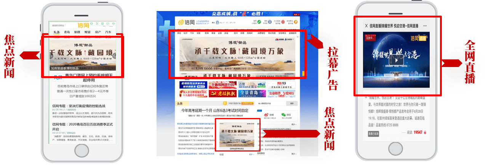

1
信网简介媒体资源
山东省级新闻网站 青岛财经生活门户
1
信网简介四大优势成就青岛主流门户网站
qdxin.cn | Introduction 信网简介主流媒体 大众报业集团传统媒体&新媒体融合
实力强劲 青岛媒体融合股股权代码800109
海量用户 专注为岛城市民服务的财经生活服务门户网站
移动延伸 “移动端”平台延伸
青岛生活服务新闻网站
qdxin.cn | Introduction 信网简介-
信网传媒成立于2014年，由山东大众报业集团半岛传媒股份有限公司全力打造，是山东省级新闻网站。信网专注于平民视角下的财经报道和与百姓生活息息相关的服务类信息，设有经济、生活、服务三个大分类，重点关注青岛本土上市企
业以及金融、房产汽车等细分行业。信网自上线以来，在业界取得了较好的口碑，成为青岛生活服务新闻门户网站。 在2016年，又与青岛市网络办共同创办了“青岛网络辟谣平台”，受到各界普遍认可。
信网传媒成立于2014年，由山东大众报业集团半岛传媒股份有限公司全力打造，是山东省级新闻网站。信网专注于平民视角下的财经报道和与百姓生活息息相关的服务类信息，设有经济、生活、服务三个大分类，重点关注青岛本土上市企业以及金融、房产汽车等细分行业。信网自上线以来，在业界取得了较好的口碑，成为青岛第一财经资讯网站。 在2016年，又与青岛市网络办共同创办了“青岛网络辟谣平台”，受到各界普遍认可。
整合营销首选，尤其擅长财经、商业、房产、金融、汽车等细分行业宣传、策划、营销。
专注创作优质新闻内容 以传播力塑造影响力
qdxin.cn | Influence 信网简介“内容为王”的媒体平台
qdxin.cn | Introduction 信网简介日均覆盖人群 - 万
依托大众报业集团半岛传媒，调动全媒体资源为客户提供覆盖式宣传服务。日均覆盖人群300-1300万。
品牌宣传首选，各纸媒主报及社区报全面覆盖岛城市场，精准到小区的线下投递，与信网线上宣传形成良好互动效果。
全面覆盖公众媒体平台
qdxin.cn | Introduction 信网简介第三方平台总粉丝数超过 万
信网专注优质信息内容的采集与编发，成为各公众媒体平台优质内容提供商。在新浪微博、微信公众号、今日头条、网易号、百家号等第三方平台总粉丝数超过1000万，每年近10亿次点击。独家与青岛市主管部门合作运营青岛网络辟谣平台，权威、专业、覆盖广泛、粉丝质量高。
优势品牌宣传首选，各纸媒主报及社区报全面覆盖岛城市场，精准到小区的线下投递，与信网线上宣传形成良好互动效果。
“信新相映”公益服务平台
qdxin.cn | Introduction 信网简介

践行社会责任服务触达基层社区
山东省统战系统经验交流 | 青岛市统战工作创新点
青岛市北区统战部重点扶持项目
介绍
信网充分发挥媒体的公信力、影响力和社会联系广泛的优势，借助平台致力社会服务工作常态化，通过开展一系列社区活动，为街道、社区辖区居民提供优质服务，给客户提供一个便民服务的通道。
上百支志愿团队、3000余名注册志愿者，每年开展活动上百场，服务30000余人次社区居民。

提供视频直播等多种传播形式需求
qdxin.cn | Introduction 信网简介优势
专业视频记者、主持人，专业后期制作，强大的视频传播能力。
介绍
信网搭建了具有自主知识产权的直播系统，可以进行多种复杂环境的现场直播，同时可进行新闻访谈、政务访谈、企业家访谈等视频服务。用视频讲述新闻事实，用视频拉近政务和网民的距离，用视频讲述企业品牌故事。
VR全景及航拍等特色产品服务
qdxin.cn | Introduction 信网简介
优势
专业器材、专业人才，技术服务娴熟，为客户提供稳定可靠的服务。
介绍
信网自主研发和搭建了第三代全景引擎，系统稳定、画面流畅。可以为客户提供全景场景拍摄、场景锚链、场景真实视角再现等 服务，为用户带来身临其境的感官体验。
同时提供无人机航拍等特色产品服务。
1小时内信息全网覆盖
qdxin.cn | Introduction 信网简介/分钟
信网内容运营团队多年深耕网络媒体市场，积累了海量媒体资源。搭建了一键式信息发布平台，海量覆盖网络媒体，24小时内可实现重点新闻网站全网覆盖。
优势覆盖式发稿首选，全国重点新闻网站、门户网站、财经类网站等新闻源网站均是一手资源。
网络谣言监测与策略性应对
qdxin.cn | Introduction 信网简介
信网以资深网络从业者以及专业的网络辟谣专家为班底，搭建专业网络谣言监测与应对体系，形成了独具一格的四维辟谣应对体系，可以在第一时间对谣言形成研判，并给出专业处置意见。
优势优势全网扫描，实时监测网站、论坛、微博、微信等平台的谣言信息； 定期出具辟谣报告，对突发事件及敏感信息进行及时预警、研判、协助处理谣言危机。
2
投放策略媒体资源搭配投放宣传效果达到极致
qdxin.cn | Introduction 投放策略媒体投放思路
qdxin.cn | Introduction 投放策略提升市场“知名度”、“影响力”、“竞争力”，参照目前实际状况，并使有限的广告宣传投入获取最大的效果。围绕“对外界准确传达行业属性，品牌声望最大化、声誉最佳化，短期内活动策划信息集中、大量传达”的思路，既重品牌宣传，又重活动效果，以建立广泛的市场人群基数和独一无二的品牌形象，构筑科学、合理的立体式传播。
战术性广告投入和战略性广告投入相结合，长期广告投入和短期广告投入相结合。
1、战略性广告投入（品牌宣传、长期）——培育品牌形象，提升市场“知名度”“影响力”“竞争力”，建立市场核心竞争力的手段，保障市场可持续发展
2、战术性广告投入（活动宣传、短期）—— 活动节点大幅跟踪宣传，用独立事件来放大、延伸品牌宣传效果、抢占市场份额， 稳定现有客户及潜力客户情绪、信心。
信网自有资源投放组合
qdxin.cn | Introduction 投放策略信网首页拉幕A-A-1
信网首页通栏A-5-1
内容：品牌内容展现
A.信网主站软文投放
B.信网自有公众平台投放
整合企业文化及各类活动，制作一系列专题在网站展现，让关注者更全面的了解企业经营内容及模式。
结合企业自身特点，寻找直播及VR全景需求点，将最新的宣传手段应用到企业宣传中。
全网扫描，实时监测网站、论坛、微博、微信等平台的谣言信息；
对突发事件及敏感信息进行及时预警、研判、协助处理谣言危机。
其他媒体资源整合传播
qdxin.cn | Introduction 投放策略
以统一的传播目标，协调其他各家合作媒体集中共同发布宣传稿件，增加广告的传播广度，延伸广告覆盖范围。
A、现场活动：协助邀请有合作的本地主流媒体参与现场活动。
B、全网覆盖式发布有重点宣传需求的稿件，至少10家媒体转载。
投放案例展示
qdxin.cn | Introduction 投放案例
| 硬广投放 | 信网-青岛财经生活服务门户网站 | 点我查看 |
| 焦点新闻 | 第三届旭辉银盛泰•青岛企业帆船联赛培训启动仪式成功举行 - 信网 | 点我查看 |
| 全网直播 | 信网直播|锦耀世界 悦启空港-信网直播 | 点我查看 |